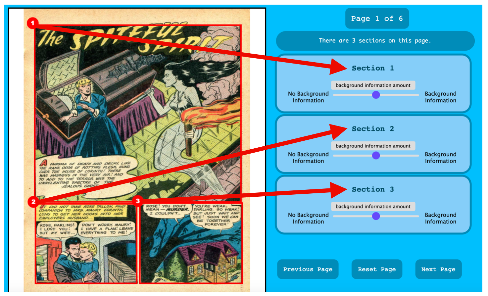

Comics are made of sequences of images. The images in comics often show the setting of where the action is taking place, or where the characters are situated - however, sometimes the background is not shown (it seems to "drop out"), or is not very detailed and there are gaps in the setting.
You are to indicate whether the background of each panel does NOT contain information about the location and setting (0), or does contain information about the location and setting (1). To make this assessment, disregard all the text sections, characters, and any objects the characters are interacting with, and only judge the remaining visual elements.
You are provided the comic pages and a slider per each panel in the comic to assign each panel a score - note that each slider section on the right matches to a numbered panel on the comic image on the left, as shown in the image below.
Move each slider left and right to assign the associated panel either 0 or 1, as shown below.

Annotation examples can be downloaded here. Please read these examples, and keep them on hand while doing the task.
Important points:
Once you've confirmed that you've read the example sheet, you may now try the task with a short practice comic strip. Continue to this task by pressing the button below.